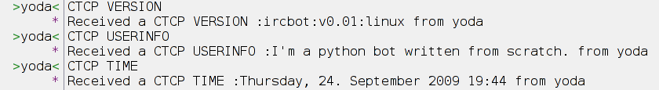

.--.
::\`--._,'.::.`._.--'/::::
::::. ` __::__ ' .::::::
::::::-:.`'..`'.:-::::::::
::::::::\ `--' /::::::::::
`--'
|

-= Projects : moksec -= Security : milw0rm, heisesec, sectube, debsec -= News : ntv, n24, spiegel, cnn, bbc, prolinux, slashdot -= Science : sciencedaily, theregister -= Torrent : isohunt, torrent!feed name -- Prints the last entries of the feed (at most 10)